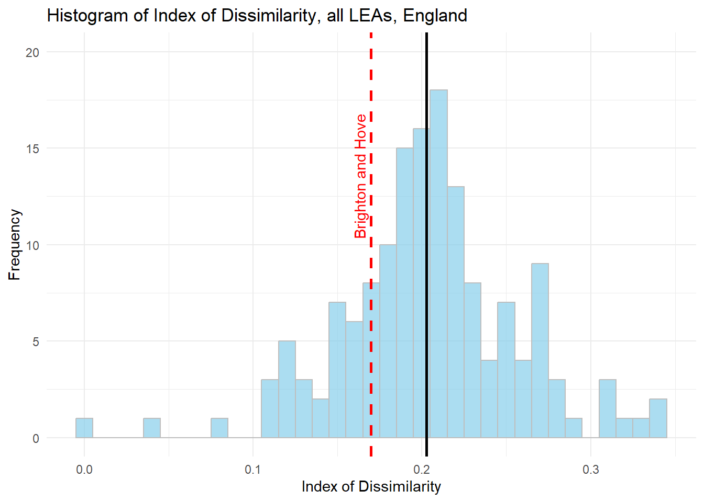
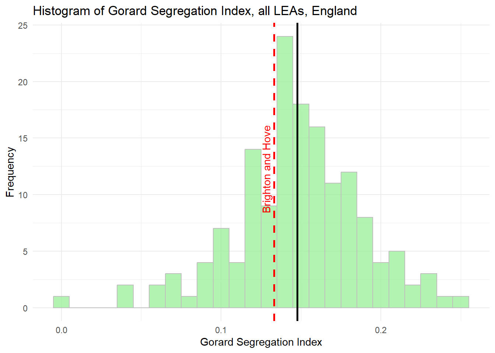
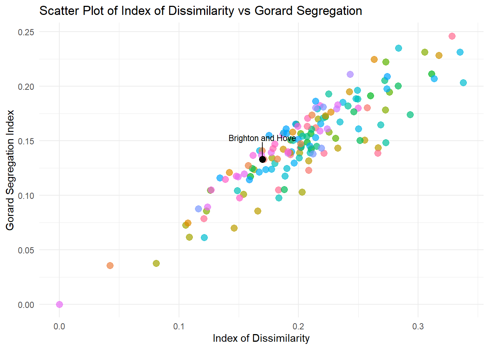

library(tidyverse)
library(here)
library(janitor)
library(sf)Gorard Segregation Index
A few scripts to calculate the Gorard Segregation Index - detailed here https://sru.soc.surrey.ac.uk/SRU30.html - using 2022-23 DfE data.
##Absence 2022-23 regression analysis
##All Data downloaded from here
##https://www.compare-school-performance.service.gov.uk/
#read in data for every school in the country
england_abs <- read_csv(here("data", "Performancetables_Eng_2022_23", "2022-2023", "england_abs.csv"), na = c("", "NA", "SUPP", "NP", "NE"))
england_census <- read_csv(here("data", "Performancetables_Eng_2022_23", "2022-2023", "england_census.csv"), na = c("", "NA", "SUPP", "NP", "NE"))
england_ks4final <- read_csv(here("data", "Performancetables_Eng_2022_23", "2022-2023", "england_ks4final.csv"), na = c("", "NA", "SUPP", "NP", "NE"))
england_school_information <- read_csv(here("data", "Performancetables_Eng_2022_23", "2022-2023", "england_school_information.csv"), na = c("", "NA", "SUPP", "NP", "NE"))
la_codes <- read_csv(here("data", "Performancetables_metadata", "2022-2023", "la_and_region_codes_meta.csv"), na = c("", "NA", "SUPP", "NP", "NE")) %>%
clean_names()
england_ks4final <- england_ks4final %>%
mutate(URN = as.character(URN)) %>%
mutate(across(TOTPUPS:PTOTENT_E_COVID_IMPACTED_PTQ_EE, ~ parse_number(as.character(.))))
england_ks4final <- england_ks4final %>%
filter(!is.na(URN))
england_abs <- england_abs %>%
mutate(URN = as.character(URN))
england_census <- england_census %>%
mutate(URN = as.character(URN))
england_school_information <- england_school_information %>%
mutate(URN = as.character(URN))
# Left join england_ks4final with england_abs
england_school_2022_23 <- england_ks4final %>%
left_join(england_abs, by = "URN") %>%
left_join(england_census, by = "URN") %>%
left_join(england_school_information, by = "URN")
data_types <- sapply(england_school_2022_23, class)
england_school_2022_23_meta <- data.frame(Field = names(data_types), DataType = data_types)Index of Dissimilarity
\[ D = 0.5* \sum {((A_i / X) - (B_i / Y))} \]
Where
\[ X = \sum A_i \]
\[ Y = \sum B_i \]
calculate_index_of_dissimilarity <- function(df) {
# Ensure the dataframe has the necessary columns
required_columns <- c("TFSM6CLA1A", "TNOTFSM6CLA1A")
if (!all(required_columns %in% colnames(df))) {
stop("Dataframe must contain the columns: TFSM6CLA1A and TNOTFSM6CLA1A")
}
# Calculate the total number of disadvantaged and non-disadvantaged pupils
total_disadvantaged <- sum(df$TFSM6CLA1A, na.rm = TRUE)
total_non_disadvantaged <- sum(df$TNOTFSM6CLA1A, na.rm = TRUE)
# Calculate the index of dissimilarity
df$dissimilarity_component <- abs(df$TFSM6CLA1A / total_disadvantaged - df$TNOTFSM6CLA1A / total_non_disadvantaged)
index_of_dissimilarity <- 0.5 * sum(df$dissimilarity_component, na.rm = TRUE)
return(index_of_dissimilarity)
}
#calculate_index_of_dissimilarity(eng_sch_2022_23_not_special_plus)
index_of_dissimilarity <- calculate_index_of_dissimilarity(england_school_2022_23_not_special)
print(index_of_dissimilarity)[1] 0.279017calculate_gorard_segregation <- function(df) {
# Ensure the dataframe has the necessary columns
required_columns <- c("TFSM6CLA1A", "TNOTFSM6CLA1A", "TPUP")
if (!all(required_columns %in% colnames(df))) {
stop("Dataframe must contain the columns: TFSM6CLA1A, TNOTFSM6CLA1A, and TPUP")
}
# Calculate the total number of disadvantaged, non-disadvantaged pupils, and total pupils
total_disadvantaged <- sum(df$TFSM6CLA1A, na.rm = TRUE)
total_pupils <- sum(df$TPUP, na.rm = TRUE)
# Calculate the Gorard Segregation Index
df$gorard_component <- abs(df$TFSM6CLA1A / total_disadvantaged - df$TPUP / total_pupils)
gorard_segregation <- 0.5 * sum(df$gorard_component, na.rm = TRUE)
return(gorard_segregation)
}
# Example usage:
gorard_segregation <- calculate_gorard_segregation(btn_sub)
print(gorard_segregation)[1] 0.1330275library(dplyr)#check functions work as intended
test <- england_school_2022_23_not_special[,c("LEA", "SCHNAME.x","TFSM6CLA1A","TNOTFSM6CLA1A", "TPUP")]
required_columns <- c("TFSM6CLA1A", "TNOTFSM6CLA1A", "TPUP")
if (!all(required_columns %in% colnames(test))) {
stop("Dataframe must contain the columns: TFSM6CLA1A, TNOTFSM6CLA1A, and TPUP")
}
total_disadvantaged <- sum(test$TFSM6CLA1A, na.rm = TRUE)
total_pupils <- sum(test$TPUP, na.rm = TRUE)
# Calculate the Gorard Segregation Index
test$gorard_component <- abs(test$TFSM6CLA1A / total_disadvantaged - test$TPUP / total_pupils)
gorard_segregation <- 0.5 * sum(test$gorard_component, na.rm = TRUE)
test_btn <- test %>%
filter(LEA == 846)
total_disadvantaged <- sum(test_btn$TFSM6CLA1A, na.rm = TRUE)
total_pupils <- sum(test_btn$TPUP, na.rm = TRUE)
# Calculate the Gorard Segregation Index
test_btn$gorard_component <- abs(test_btn$TFSM6CLA1A / total_disadvantaged - test_btn$TPUP / total_pupils)
gorard_segregation <- 0.5 * sum(test_btn$gorard_component, na.rm = TRUE)library(dplyr)
# Function to calculate the Index of Dissimilarity
calculate_index_of_dissimilarity <- function(df) {
total_disadvantaged <- sum(df$TFSM6CLA1A, na.rm = TRUE)
total_non_disadvantaged <- sum(df$TNOTFSM6CLA1A, na.rm = TRUE)
df$dissimilarity_component <- abs(df$TFSM6CLA1A / total_disadvantaged - df$TNOTFSM6CLA1A / total_non_disadvantaged)
index_of_dissimilarity <- 0.5 * sum(df$dissimilarity_component, na.rm = TRUE)
return(index_of_dissimilarity)
}
# Function to calculate the Gorard Segregation Index
calculate_gorard_segregation <- function(df) {
total_disadvantaged <- sum(df$TFSM6CLA1A, na.rm = TRUE)
total_pupils <- sum(df$TPUP, na.rm = TRUE)
df$gorard_component <- abs(df$TFSM6CLA1A / total_disadvantaged - df$TPUP / total_pupils)
gorard_segregation <- 0.5 * sum(df$gorard_component, na.rm = TRUE)
return(gorard_segregation)
}
# Apply the functions to each LEA and create a new dataframe with the results
results_df <- england_school_2022_23_not_special %>%
group_by(LEA) %>%
summarise(
index_of_dissimilarity = calculate_index_of_dissimilarity(cur_data()),
gorard_segregation = calculate_gorard_segregation(cur_data())
)Warning: There was 1 warning in `summarise()`.
ℹ In argument: `index_of_dissimilarity =
calculate_index_of_dissimilarity(cur_data())`.
ℹ In group 1: `LEA = 202`.
Caused by warning:
! `cur_data()` was deprecated in dplyr 1.1.0.
ℹ Please use `pick()` instead.# Print the results
print(results_df)# A tibble: 152 × 3
LEA index_of_dissimilarity gorard_segregation
<dbl> <dbl> <dbl>
1 202 0.166 0.0854
2 203 0.201 0.139
3 204 0.203 0.103
4 205 0.311 0.211
5 206 0.146 0.0700
6 207 0.208 0.132
7 208 0.267 0.144
8 209 0.154 0.101
9 210 0.255 0.151
10 211 0.0808 0.0375
# ℹ 142 more rows# Join the dataframes
merged_df <- left_join(results_df, la_codes, by = c("LEA" = "lea"))
library(ggplot2)
# Calculate the median of the Gorard Segregation Index
median_index_of_dissimilarity <- median(merged_df$index_of_dissimilarity, na.rm = TRUE)
# Plotting the Gorard Segregation Index
ggplot(merged_df, aes(x = index_of_dissimilarity)) +
geom_histogram(binwidth = 0.01, fill = "skyblue", color = "grey", alpha = 0.7) +
geom_vline(aes(xintercept = median_index_of_dissimilarity), color = "black", linetype = "solid", size = 1) +
geom_vline(aes(xintercept = merged_df$index_of_dissimilarity[merged_df$LEA == 846]), color = "red", linetype = "dashed", size = 1) +
annotate("text", x = merged_df$index_of_dissimilarity[merged_df$LEA == 846], y = 20, label = "Brighton and Hove", angle = 90, vjust = -0.5, hjust = 1.5, color = "red") +
labs(title = "Histogram of Index of Dissimilarity, all LEAs, England",
x = "Index of Dissimilarity",
y = "Frequency") +
theme_minimal()Warning: Using `size` aesthetic for lines was deprecated in ggplot2 3.4.0.
ℹ Please use `linewidth` instead.Warning: Use of `merged_df$index_of_dissimilarity` is discouraged.
ℹ Use `index_of_dissimilarity` instead.Warning: Use of `merged_df$LEA` is discouraged.
ℹ Use `LEA` instead.
library(ggplot2)
# Calculate the median of the Gorard Segregation Index
median_gorard_segregation <- median(merged_df$gorard_segregation, na.rm = TRUE)
# Plotting the Gorard Segregation Index
ggplot(merged_df, aes(x = gorard_segregation)) +
geom_histogram(binwidth = 0.01, fill = "lightgreen", color = "grey", alpha = 0.7) +
geom_vline(aes(xintercept = median_gorard_segregation), color = "black", linetype = "solid", size = 1) +
geom_vline(aes(xintercept = merged_df$gorard_segregation[merged_df$LEA == 846]), color = "red", linetype = "dashed", size = 1) +
annotate("text", x = merged_df$gorard_segregation[merged_df$LEA == 846], y = 20, label = "Brighton and Hove", angle = 90, vjust = -0.5, hjust = 1.5, color = "red") +
labs(title = "Histogram of Gorard Segregation Index, all LEAs, England",
x = "Gorard Segregation Index",
y = "Frequency") +
theme_minimal()Warning: Use of `merged_df$gorard_segregation` is discouraged.
ℹ Use `gorard_segregation` instead.Warning: Use of `merged_df$LEA` is discouraged.
ℹ Use `LEA` instead.
library(dplyr)
library(ggplot2)
library(ggrepel)
# Scatter plot of index_of_dissimilarity vs gorard_segregation with annotation
ggplot(merged_df, aes(x = index_of_dissimilarity, y = gorard_segregation)) +
geom_point(aes(color = region_name), size = 3, alpha = 0.7) +
geom_point(data = subset(merged_df, LEA == 846), size = 3, color = "black") +
geom_text_repel(data = subset(merged_df, LEA == 846),
aes(label = "Brighton and Hove"),
size = 3, nudge_y = 0.02, force = 10, box.padding = 0.5, direction = "both") +
labs(title = "Scatter Plot of Index of Dissimilarity vs Gorard Segregation",
x = "Index of Dissimilarity",
y = "Gorard Segregation Index") +
theme_minimal() +
theme(legend.position = "none") # Remove the legend
library(ggplot2)
library(ggrepel)
# Scatter plot of index_of_dissimilarity vs gorard_segregation with annotation
ggplot(merged_df, aes(x = index_of_dissimilarity, y = gorard_segregation)) +
geom_point(aes(color = factor(LEA == 846)), size = 3, alpha = 0.7) +
scale_color_manual(values = c("grey", "red")) +
geom_text_repel(data = subset(merged_df, LEA == 846),
aes(label = "Brighton and Hove"),
size = 3, nudge_x = 0.1, nudge_y = -0.05, force = 10, box.padding = 0.5, direction = "both") +
labs(title = "Scatter Plot of Index of Dissimilarity vs \nGorard Segregation, all LEAs in England",
x = "Index of Dissimilarity",
y = "Gorard Segregation Index") +
theme_minimal() +
theme(legend.position = "none")
ggsave(here("images", "segregation_plot.png"))Saving 7 x 5 in image